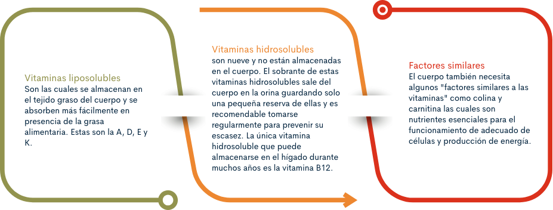
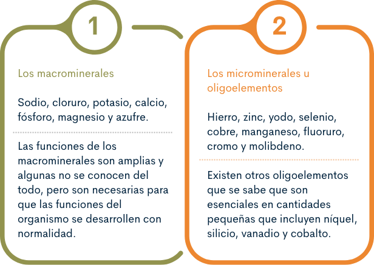
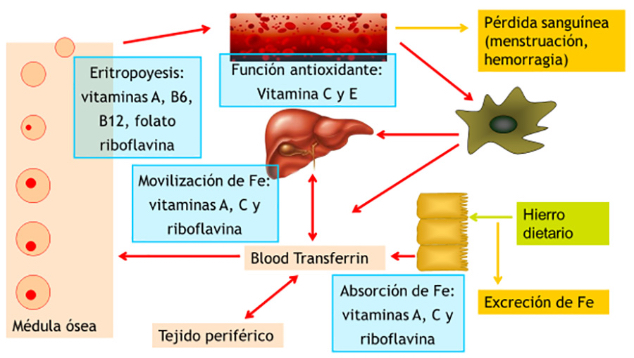

1. Micronutrientes
Anexo. Carencia de micronutrientes.
Puede ahondar sobre la carencia de micronutrientes a través del sitio web de la Organización Mundial de la Salud.
1.1. Vitaminas
Las vitaminas son sustancias necesarias para el funcionamiento celular, crecimiento y desarrollo normal.
Cuando no se obtiene suficiente cantidad de cierta vitamina se produce una deficiencia vitamínica, que pueden causar problemas de salud, por ejemplo el consumo insuficiente de frutas, verduras, legumbres, lentejas, granos integrales y productos lácteos enriquecidos puede incrementar el riesgo de problemas de salud, como enfermedad cardíaca, cáncer y deficiencia ósea (osteoporosis).
Existen 13 vitaminas esenciales que el cuerpo requiere para que funcione apropiadamente y cada una cumple una función importante y específica: Vitamina A, Vitamina C, Vitamina D, Vitamina E, Vitamina K, Vitamina B1 o tiamina, Vitamina B2 o riboflavina, Vitamina B3 o niacina, Ácido pantoténico o B5, Biotina o B7, Vitamina B6, Vitamina B12 o cianocobalamina, Folato o ácido fólico o B9.
La función de cada una de las vitaminas y su alimento fuente se presenta en la siguiente tabla:
Formación y mantenimiento de dientes, tejidos óseos y blandos, membranas mucosas y piel sanos.
Frutas de color oscuro, Hortalizas de hoja verde, Yema de huevo, Productos lácteos y leche enriquecidos (queso, yogur, mantequilla y crema de leche), Hígado, carne de res y pescado
Formación de glóbulos rojos y al mantenimiento de la función cerebral. Juega un papel importante en las proteínas que participan de muchas reacciones químicas en el cuerpo: A más proteína se consuma, más piridoxina requiere su cuerpo.
Aguacate, Plátano (banano), Legumbres (frijoles secos), Carne de res, Nueces, Carne de aves de corral, Granos integrales (la molienda y el procesamiento eliminan mucha de esta vitamina)
Importante para el metabolismo, ayuda a la formación de glóbulos rojos y al mantenimiento del sistema nervioso central.
Carne, Huevos, Alimentos fortificados como la leche de soya (soja), Leche y productos lácteos, Vísceras (hígado y riñón), Carne de aves de corral, Mariscos
Es antioxidante, favorece los dientes y encías sanos. Ayuda al cuerpo a absorber el hierro y a mantener el tejido saludable. Es esencial para la cicatrización de heridas.
Brócoli, Coles de Bruselas, Repollo, Coliflor, Cítricos, Patatas, Espinaca, Fresas, Tomate y jugo de tomate
Se produce luego de la exposición a la luz solar con 10 a 15 minutos de exposición al sol por 3 veces a la semana son suficientes para producir los requerimientos corporales de esta vitamina para la mayoría de las personas y en la mayoría de las latitudes. Es posible que las personas que no viven en lugares soleados no produzcan suficiente vitamina D. Es difícil obtener suficiente vitamina D únicamente de fuentes alimenticias. Ayuda al cuerpo a absorber el calcio y mantener niveles sanguíneos apropiados de calcio y fósforo.
Pescado (graso como el salmón, la caballa, el arenque y la perca emperador), Aceites de hígado de pescado (aceite de hígado de bacalao), Cereales enriquecidos, Productos lácteos y leche enriquecidos (queso, yogur, mantequilla y crema de leche), Vitamina E.
Es un antioxidante. Ayuda al cuerpo a formar glóbulos rojos y a utilizar la vitamina K.
Aguacate, Hortalizas de hoja verde oscura (espinaca, brócoli, espárrago y hojas de nabo), Margarina (hechas de aceite de cártamo, maíz y girasol), Aceites (cártamo, maíz y girasol), Papaya y mango, Semillas y nueces, Germen de trigo y aceite de germen de trigo.
Sin ella, la sangre no se solidificaría (coagularía). Algunos estudios sugieren que es importante para la salud de los huesos.
Repollo (col), Coliflor, Cereales, Hortalizas de hoja verde oscura (brócoli, col de Bruselas y espárrago), Verduras de hoja oscura (espinaca, col rizada, berza y hojas de nabo), Pescado, hígado, carne de res y huevos.
Esencial para el metabolismo de proteínas y carbohidratos, al igual que en la producción de hormonas y colesterol.
Chocolate, Cereal, Yema de huevo, Legumbres, Leche. Nueces, Vísceras (hígado, riñón), Carne de cerdo, Levadura.
Pertenece al complejo B, ayuda a mantener saludable la piel y los nervios. Reducen el colesterol en dosis altas.
Aguacate, Huevos, Panes enriquecidos y cereales fortificados, Pescado (atún y peces de agua salada), Carnes magras, Legumbres, Nueces, Patata, Carne de aves de corral.
Ayudar en la formación de glóbulos rojos junto con la vitamina B12. Es necesario para la producción del ADN, que controla el crecimiento tisular y la función celular. La mujer embarazada debe asegurarse de consumir cantidades adecuadas de folato porque los niveles bajos de esta vitamina están asociados con defectos congénitos como la espina bífida.
Espárragos y brócoli, Remolachas, Levadura de la cerveza, Frijoles secos (moteado, blanco común, poroto, lima), Cereales fortificados, Hortalizas de hoja verde (espinaca y lechuga romana), Lentejas, Naranjas y jugo de naranja, Mantequilla de maní, Germen del trigo.
Esencial para el metabolismo de los alimentos. Desempeña un papel en la producción de hormonas y colesterol.
Aguacate, Brócoli, col rizada y otras hortalizas en la familia del repollo, Huevos, Legumbres y lentejas, Leche, Champiñones, Vísceras, Carne de aves de corral, Patata blanca y camote, Cereales de granos integrales.
Funciona en conjunto con las otras vitaminas del complejo B. Importante para el crecimiento corporal y la producción de glóbulos rojos.
Productos lácteos, Huevos, Hortalizas de hoja verde, Carnes magras, Vísceras, como hígado o riñón, Legumbres, Leche, Nueces.
Ayuda a las células corporales a convertir los carbohidratos en energía. Esencial para el funcionamiento del corazón y las neuronas sanas.
Leche en polvo, Huevo, Pan y harina enriquecidos, Carnes magras, Legumbres (frijoles secos), Nueces y semillas, Vísceras, Guisantes, Granos integrales.
Ayuda en el funcionamiento normal del cerebro y el sistema nervioso. La falta de colina puede causar hinchazón en el hígado.
Huevos, la carne roja, los cacahuetes, el pollo, el bacalao, la leche, las coles de Bruselas, el ajo, las berenjenas, la lechuga, zanahorias, plátano, pomelo, fresas, naranjas, la coliflor, el tofu o la jalea real.
La ayuda al cuerpo a convertir los ácidos grasos en energía.
Carnes, la leche y los pescados.
Fuente. Construcción propia con fuente de información https://medlineplus.gov/
Hay dos categorías de vitaminas y factores similares:

La cantidad de cada vitamina que el organismo necesita depende de la edad, sexo, estado de salud y si es una mujer en estado de embarazo.
Para obtener todas las vitaminas diarias que se necesitan la mejor manera es consumir una dieta balanceada en calidad y cantidad que contenga frutas, verduras, productos lácteos enriquecidos, legumbres (frijoles secos), lentejas y granos integrales.
Otra manera de obtener las vitaminas son los suplementos dietéticos que pueden ser útiles durante el embarazo y para problemas de salud especiales.
1.2 Minerales
Los minerales que necesita el organismo se llaman minerales esenciales y se dividen en minerales principales (macrominerales) y oligoelementos (microminerales). Aunque los dos tienen la misma importancia, los oligoelementos se necesitan en menores cantidades que los minerales principales.
Macrominerales
Necesario para equilibrio adecuado de líquidos, la transmisión nerviosa y la contracción muscular.
Sal de mesa, salsa de soya; alimentos procesados; en la leche en pequeñas cantidades, los panes, las verduras y las carnes sin procesar.
Necesario para equilibrio adecuado de líquidos, ácido estomacal.
Junto con el sodio está presente en: Sal de mesa, salsa de soya; alimentos procesados; en la leche en pequeñas cantidades, los panes, las verduras y las carnes sin procesar.
Necesario para un equilibrio adecuado de líquidos, la transmisión nerviosa y la contracción muscular.
Carnes, leche, frutas y verduras frescas, granos integrales, legumbres.
Importante para la salud de los dientes y los huesos; ayuda a relajar y a contraer los músculos; importante en el funcionamiento nervioso, la coagulación de la sangre, la regulación de la presión arterial, la salud del sistema inmunitario.
Leche y productos lácteos, pescado con huesos en lata (salmón, sardinas), tofu y leche de soya fortificados, verduras (brócoli, brotes de mostaza), legumbres.
Para la salud de los dientes y los huesos; se encuentra en todas las células; parte del sistema que mantiene el equilibrio acido básico.
Carne, pescado, aves, huevos, leche, alimentos procesados, incluyendo las bebidas gaseosas.
Se encuentra en los huesos; necesario para producir proteína, contracción muscular, transmisión nerviosa, salud del sistema inmunitario.
Frutos secos y semillas, legumbres, verduras de hoja verde, pescados y mariscos, chocolate, alcachofas, agua potable "dura".
Presente en las moléculas de las proteínas.
Se encuentra en los alimentos como parte de la proteína: carnes, aves, pescado, huevos, leche, legumbres, frutos secos.
Oligoelementos o Microminerales
Hace parte de una molécula, la hemoglobina, que se encuentra en los glóbulos rojos y que transporta el oxígeno necesario para el metabolismo de la energía en el organismo.
Vísceras, carnes rojas, pescado, aves, mariscos (especialmente las almejas), yemas de huevo, legumbres, frutas desecadas, verduras de hoja verde oscuro, panes y cereales enriquecidos con hierro, y cereales fortificados.
Hace parte de muchas enzimas; necesario para producir proteína y material genético; tiene una función en la percepción del gusto; curación de heridas; desarrollo fetal normal; producción de semen; crecimiento y maduración sexual normales, salud del sistema inmunitario.
Carnes, pescado, aves, granos integrales con levadura, verduras.
Está en la hormona tiroidea, que ayuda a regular el crecimiento, el desarrollo y el metabolismo.
Pescados y mariscos, alimentos producidos en suelos ricos en yodo, sal con yodo, pan, productos lácteos.
Es un antioxidante.
Carnes, pescados y mariscos, granos.
Parte de muchas enzimas; necesario para el metabolismo del hierro.
Legumbres, nueces y semillas, granos integrales, vísceras, agua potable.
Hace parte de muchas enzimas.
Se encuentra en muchos alimentos, especialmente en alimentos de origen vegetal.
Esencial en la formación de huesos y dientes. Ayuda a prevenir caries.
Agua potable (tanto fluorada como naturalmente con fluoruro), pescado y la mayoría de los tés.
La insulina y el cromo actúan estrechamente para regular los niveles de azúcar en la sangre (glucosa).
Alimentos no refinados, especialmente el hígado, la levadura de cerveza, granos integrales, frutos secos, quesos.
Parte de algunas enzimas
Legumbres, panes y granos, verduras de hoja y verduras de hoja verde, leche, hígado.
Fuente. Construcción propia con fuente: https://www.cigna.com/individuals-families/health-wellness/hw-en-espanol/temas-de-salud/minerales-ta3912
Hay dos categorías de minerales:

2. Anemia
Varios estudios sugieren que la anemia puede estar asociada a una evolución desfavorable en varios desórdenes clínicos, pero en este caso se enfoca la anemia por deficiencia de micronutrientes.
El “hambre oculta” es la deficiencia de micronutrientes que se produce por el consumo insuficiente de los alimentos que son esenciales como: frutas, legumbres verduras, pescados, aceites vegetales, además de leche y derivados. Puede aparecer en personas que tienen un consumo adecuado de calorías o en las que presentan exceso de peso u obesidad.
La anemia es un indicador de mal estado de nutrición y de salud de una persona, comunidad y país. La anemia es definida como un trastorno en el que el número y tamaño de los eritrocitos, o bien cuando la concentración de hemoglobina, caen por debajo de un determinado valor de corte disminuyendo así la capacidad de la sangre para el transporte de oxígeno en el organismo. La Organización Mundial de la Salud (OMS) ha definido los niveles de hemoglobina iguales a 11g / dl (Los valores de corte varían según la edad, sexo, altitud, tabaquismo y estado de embarazo”). La deficiencia de hierro es el micronutriente más extendido del mundo que resulta en deficiencia crónica de hierro o anemia por deficiencia de hierro.
2.1 Efectos individuales y colectivos de la anemia
Las causas de la anemia son diversas, y diferentes estudios demuestran que la mitad de los casos se debe a una deficiencia de hierro llamada también ferropenia.
La anemia nutricional está relacionada con otros indicadores nutricionales como retraso del crecimiento, bajo peso al nacer, sobrepeso en la infancia, lactancia materna exclusiva y emaciación.
Comprensión social y cultural
Según la OMS la deficiencia de hierro afecta a más personas que cualquier otra afección, por lo tanto, se convierte para los países en un problema de salud pública que llega a tener proporciones epidémicas.
De acuerdo a lo anterior la prevalencia de anemia por deficiencia de hierro se da en los niños en edad preescolar, escolar, mujeres en edad fértil y mujeres gestantes. También se da en adultos, especialmente mujeres y personas de la tercera edad.
La prevención de la anemia en embarazadas y niños menores de dos años constituye un desafío para el país. Es ideal repasar la situación de las deficiencias de micronutrientes en el documento de la ENSIN 2015 donde se presenta la deficiencia de hierro (Fe), Vitamina A y Zinc por grupos de población del curso de vida.
Efectos sociales y económicos de la anemia
La anemia por carencia de hierro tiene efectos económicos y sociales individuales, familiares y comunitarios. La ferropenia o deficiencia de hierro tienen consecuencias graves para la salud y también tiene consecuencias sociales y económicas para la familia y el país, porque se pierde fuerza laboral, aumentan los gastos en salud, afecta el desarrollo y crecimiento de la población para finalmente obstaculizar el desarrollo de los países. Los grupos de personas más afectados por la anemia son las personas más vulnerables, pobres y de menor nivel educativo. La anemia ferropénica compromete la habilidad del niño y la niña para aprender, lo que limita sus perspectivas de futuro y dificulta el desarrollo de la población. Es por ello que la OMS alerta sobre el hecho de que si la anemia se trata a tiempo es posible restablecer la salud de las personas e incrementar los niveles de productividad nacional en hasta un 20%.
La anemia por falta de hierro no se soluciona de una manera simple con consumir solamente más hierro. Para que el hierro se absorba correctamente se necesita un grupo de vitaminas y minerales que actúan en el organismo como equipo en los distintos procesos que pasan en el cuerpo.
Este grupo de vitaminas y minerales está conformado por: la vitamina A, C, E, B12, B2, B6 y el ácido fólico que ayudan en el proceso de formación celular, movilizar el hierro y asegurar que el intestino tenga lo necesario para realizar el proceso de absorción. Esta interacción se presenta en el siguiente esquema:
Rol de las vitaminas en la absorción de Fe y eritropoyesis

Fuente. DSM – Adaptado de Hughes – Jones & Wickramasinghe, 1996
Es importante que recuerde profundizar en los determinantes de la anemia nutricional a partir de los resultados de la ENSIN 2015.
2.2 Importancia de la prevención de la anemia nutricional
En la primera infancia los problemas nutricionales por la deficiencia de micronutrientes y especialmente por hierro, generan un impacto en el desarrollo físico y en el desarrollo del cerebro. Por lo cual las intervenciones nutricionales durante los primeros dos años de vida son cruciales para asegurar la productividad, el desarrollo social y económico de una población; “si las deficiencias en vitaminas y minerales no se corrigen entre la concepción y la edad de dos años, puede ser demasiado tarde para reversarlas más adelante, y constituirse en un problema de salud pública” (Gillespie, Mason, & Reynaldo, 1996).
En este periodo de vida el recién nacido a término, tiene reservas de hierro altas, sin embargo, la concentración fetal cae entre los 5 y 6 meses y se requiere que los niños obtengan el hierro de fuentes exógenas como es la alimentación con leche materna y el adecuado inicio de la alimentación complementaria a los 6 meses. (Organización Panamericana de la Salud, s,f).
La leche materna posee una alta biodisponibilidad de hierro, lo cual permite que se absorba muy bien en el intestino. Se acepta ampliamente que la ingesta de hierro del lactante alimentado exclusivamente con leche humana debe cubrir las necesidades de hierro de todos los niños (Organización Panamericana de la Salud, s,f).

A los 6 meses de edad se inicia la alimentación complementaria, manteniendo la lactancia materna y la evidencia ha demostrado que es una fase de gran vulnerabilidad y un momento crucial de la alimentación del niño donde se puede presentar la malnutrición. También es uno de los periodos que más contribuye a la alta prevalencia de las deficiencias de micronutrientes en los menores de 5 años, por lo cual se requiere fortalecer la educación para fomentar el inicio de la alimentación complementaria con alimentos fuente de hierro y prever la suplementación de los nutrientes que pueden ser críticos en esta transición.
La Organización Mundial de la Salud (OMS), en el año 2016 a través de su directriz para el uso de micronutrientes en polvo para la fortificación en sitio de consumo de los alimentos consumidos por lactantes y niños de 6 a 23 meses de edad planteó como una recomendación fuerte la fortificación de los alimentos con micronutrientes en polvo que contengan al menos hierro, vitamina A y zinc para mejorar la dotación de hierro y reducir la anemia en lactantes y niños de 6 a 23 meses de edad
2.3. Determinantes sociales de la anemia
La Organización Panamericana de la Salud (OPS) y la Organización Mundial de la Salud (OMS) han considerado como determinantes sociales en temas de salud en tres categorías:
a. El individual que incluiría aspectos psicosociales. conductuales y biológicos del sujeto.
b. El intermedio referido a los recursos materiales
c. El estructural que corresponde al contexto socioeconómico.
Dentro de los determinantes sociales que consideramos en la anemia se incluye el nivel educativo, empleo, nivel y distribución de los ingresos, vivienda, desarrollo de la primera infancia, seguridad alimentaria, estado nutricional, raza, género y estado de estrés.
En los resultados de la ENSIN 2015 se presentan los determinantes que influyen en la prevalencia de anemia, en la deficiencia de Fe, Vitamina A y Zinc en la primera infancia y en la anemia y deficiencia de Fe en la mujer gestante y que se resumen:
1. La edad en primera infancia donde se presentó mayor prevalencia de anemia a menor edad de los niños y las niñas y por lo tanto pueden sufrir las consecuencias.
2. La etnia que encuentra mayor prevalencia en niños, niñas indígenas y afrodescendientes.
3. Ubicación geográfica o la región donde viven determina la prevalencia en anemia.
4. El acceso a servicios básicos.
5. El índice de riqueza mayor prevalencia en el cuartil más bajo de riqueza
6. El aseguramiento de la salud tiene más prevalencia en los que no están asegurados.
7. El control de crecimiento, desarrollo y prenatal tiene más alta prevalencia cuando los niños y niñas no asisten a control de crecimiento y desarrollo o cuando la gestante no asiste a control prenatal según lo establecido en la norma de salud.
8. El parto no institucional pues cuando hace falta una asistencia de un servicio de salud se generan complicaciones.
9. Presencia de otras morbilidades como episodios repetidos de diarrea (Enfermedad Diarreica Aguda), infecciones respiratorias (ERA) especialmente en niños de 6 a 11 meses.
10. La concentración de la población es cuando es más alta la prevalencia en el área que el resto.
3. Estrategias de prevención
Dentro de las acciones específicas para prevenir, atender y controlar el efecto de la deficiencia de micronutrientes, se cuenta con la estrategia nacional para la prevención y control de las deficiencias de micronutrientes en Colombia 2014-2021, que presenta como principal objetivo “Prevenir y reducir las deficiencias de micronutrientes en la población colombiana, con énfasis en niños y niñas hasta 12 años, gestantes y mujeres en edad fértil” (MINSALUD, 2015).
3.1 Líneas de acción para la prevención y control de las deficiencias de micronutrientes
Para alcanzar este objetivo e impactar de manera favorable y sostenible se proponen 5 líneas de acción, las cuales deben ser implementadas de manera articulada con individuos y comunidades para lograr reducir la deficiencia nutricional y mejorar la calidad de vida:
Busca promover la combinación de alimentos variados, nutritivos, propios de las regiones y en cantidades adecuadas que permitan el aporte de nutrientes sugeridos para la edad y estado fisiológico de la población, sin alterar su relación con las costumbres y reconociendo que los usos de los alimentos son el producto de su ambiente actual y de su historia (MINSALUD, 2016).
Para mejorar la disponibilidad, el acceso y utilización de los alimentos con un alto contenido y biodisponibilidad de micronutrientes de manera permanente, es necesario conocer los patrones de la dieta de las poblaciones, creencias y preferencias alimentarias a fin de promover el desarrollo de capacidades y cambios efectivos en actitudes y prácticas relacionadas con la producción de alimentos, los patrones de selección de alimentos y métodos tradicionales de preparación de alimentos que conllevan al consumo de una alimentación variada y adecuada según el curso de vida (MINSALUD, 2015).
En este sentido, las Guías Alimentarias Basadas en Alimentos y no en nutrientes, permiten una mejor aceptación y comprensión por parte de las poblaciones y de los individuos para seleccionar los alimentos de acuerdo con sus necesidades, favoreciendo de manera integral la selección de la alimentación saludable considerándose una herramienta importante para la educación nutricional en diferentes entornos como los programas de alimentación, nutrición en los hogares, escuelas, universidades y en general en los espacios que involucren a todas las personas (MINSALUD, 2015).
Este tipo de acciones parten de considerar que la deficiencia de micronutrientes, en este caso el hierro, puede ser reversible si se trata a tiempo antes y durante la gestación y periodo de lactancia, por lo tanto, las intervenciones que se realicen entre la concepción y los primeros dos años de vida serán fundamentales para asegurar la productividad, el nivel académico y social de estos individuos (MINSALUD, 2015).
El pinzamiento, clampeo o ligadura oportuna del cordón umbilical consiste en permitir el flujo de sangre placentaria al niño recién nacido hasta que el cordón deje de latir, es decir hasta que cese el paso de sangre por el cordón (2 a 3 minutos aproximadamente), o hasta que deje de latir, para luego proceder a pinzarlo y a cortarlo. (MINSALUD, 2015).
Esta medida reduce el riesgo de anemia ya que permite aumentar las reservas de hierro desde el nacimiento hasta los 6 - 8 meses de edad del niño. Es una práctica altamente costo-efectiva. Esta medida se complementa con lactancia materna inmediata y exclusiva.
Las acciones de protección, promoción y apoyo a la lactancia materna están en el marco del cumplimiento de compromisos internacionales como la Estrategia Mundial para la Alimentación del Lactante y del Niño Pequeño, reafirmando que una de las áreas prioritarias son las acciones de nutrición en los mil primeros días de vida con énfasis en lactancia materna y alimentación complementaria.
La evidencia científica confirma los múltiples beneficios de la lactancia materna, tanto para los niños como para la madre, entre ellos: los niños amamantados presentan mejores resultados en pruebas de desarrollo intelectual y motor, el contacto físico entre la madre y el hijo proporciona un estímulo psicosocial y beneficios al desarrollo. La OMS establece que es el método de alimentación infantil más seguro y saludable.
La leche materna aporta en su composición hierro que se absorbe en un 50% (el aportado por las fórmulas lácteas se absorbe en un 15%), adicionalmente, la presencia de la lactoferrina que actúa como enzima fijadora de hierro e inhibe el crecimiento de bacterias patógenas en el tracto gastrointestinal.
Así mismo, la utilización de leche de vaca en el primer año de vida está contraindicada tanto por el bajo contenido de hierro como por el riesgo de micro hemorragias intestinales ya que hay relación entre el consumo de leche de vaca y la pérdida de sangre por el tracto intestinal de niños saludables con edades entre 7 y 12 meses (MINSALUD, 2015)
Es una estrategia de salud pública que consiste en la administración masiva de antihelmínticos con una regularidad establecida, utilizada en poblaciones en riesgo de transmisión de geohelmintiasis, con personas que cumplan con criterios de inclusión (población elegible), en áreas endémicas. Esta intervención requiere de acciones sobre los diferentes determinantes sociales de la salud, de manera intersectorial, como es el acceso al agua potable, La presencia de las geohelmintiasis está directamente relacionada con anemia crónica por deficiencia de hierro y de micronutrientes, retraso en el crecimiento y obstrucción intestinal.
Hace referencia a la adición de micronutrientes a los alimentos procesados. En Colombia se plantean los siguientes métodos, la elección del método depende del nutriente y alimento. (MINSALUD, 2015).
Se define como la adición de uno o más nutrientes esenciales a un alimento si está o no contenido normalmente en la comida, con el propósito de prevenir o corregir una deficiencia demostrada de uno o más nutrientes en la población o en grupos específicos de la población. Para la fortificación de alimentos con hierro se utilizan alimentos como: productos cereales, pan y harina de yuca, en Colombia se fortifica la sal y la harina de trigo como medida de salud pública para la reducción de deficiencia de Hierro, Flúor, Ácido Fólico, Yodo, Vitamina B y Calcio.
Los Alimentos Complementarios Fortificados (ACF) hacen referencia a aquellos con los cuales se inicia la alimentación complementaria en los niños a partir de los 6 meses y que complementan la lactancia materna en los niños y niñas hasta los 2 años y que han sido fortificados con micronutrientes para mejorar el aporte nutricional de vitaminas y minerales. (MINSALUD, 2015). Colombia cuenta con alimentos fortificados como los Alimentos de alto Valor Nutricional, entre ellos la bienestarina Mas®, bienestarina líquida, alimento para la mujer gestante y madre en periodo de lactancia, son fortificados con ácido fólico, hierro aminoquelado y zinc aminoquelado.
Consiste en agregar una mezcla de micronutrientes en polvo a los alimentos preparados en casa. La presentación de este polvo es en sobres individuales, que contienen la dosis diaria lista para consumo. La evidencia científica ha demostrado que la fortificación casera de alimentos en niños y niñas menores de 5 años y mujeres gestantes, es efectiva en la reducción de la anemia por deficiencia de hierro nutricional.
Es el proceso mediante el cual se obtienen alimentos vegetales que resultan enriquecidos en micronutrientes biodisponibles. Estos cultivos “se fortifican a sí mismos”, y soportan altos niveles de minerales y vitaminas en sus semillas y raíces, los cuales serán cosechados y consumidos. Esta es una estrategia innovadora para el abordaje de la desnutrición por micronutrientes de manera sostenible. (MINSALUD, 2015).
Es el mejoramiento de la ingesta de nutrientes a través de formas farmacéuticas por vía oral o parenteral. Principalmente se realiza suplementación de Hierro, Vitamina A, Zinc, Ácido Fólico, Calcio, o cualquier otra vitamina o mineral que sea deficiente en la población; siendo esta una medida que permite la atención individualizada y logra impacto a corto plazo en la población definida para intervención. (MINSALUD, 2015).
3.2. Información educación y comunicación.
Las estrategias de Información, Educación y Comunicación (IEC), son consideradas complementarias y necesarias para la prevención y control de la anemia, dado que articuladas con las diferentes acciones propuestas pueden favorecer de manera positiva las prácticas de alimentación, nutrición y estilos de vida saludables.
Las estrategias están enfocadas en el desarrollo de habilidades de los sujetos para tomar decisiones adecuadas en cuanto a su alimentación y en la promoción de un ambiente alimentario propicio. Las acciones de educación nutricional se desarrollan en los ámbitos individual, comunitario, y político.
En este sentido el ICBF cuenta con la Estrategia de Información, Educación y Comunicación en Seguridad Alimentaria y Nutricional, la cual es definida como un “conjunto de acciones educativas que buscan el cambio permanente de comportamientos para favorecer prácticas alimentarias saludables; dirigida a audiencias activas y participantes en el hogar, la escuela, el sitio de trabajo y/o la comunidad”. (ICBF-FAO. 2019)
Por lo tanto, el diseño de las estrategias IEC deben tener en cuenta aspectos claves como las líneas orientadoras de la Estrategia Nacional de IEC en SAN del ICBF, las cuales, contribuyen a lograr el cambio del comportamiento, entre las que se encuentran:
a.La influencia que tienen los entornos (individual, familiar, comunitario, institucional, nacional) a partir del modelo ecológico social para entender que los comportamientos y la toma de decisiones de las personas.
b.La educación alimentaria y nutricional (EAN) como proceso sistemático, que debe considerar las motivaciones e intereses de las personas, su entorno, permitiendo promover aprendizajes prácticos y habilidades orientadas a la acción.
c.Las habilidades blandas del agente educativo facilitador que permitan interactuar y comunicarse de manera efectiva.
d.Los Principios de efectividad, que parten de considerar los conocimientos previos y los intereses prácticos de las personas y comunidades.
e.Estrategias apropiadas de aprendizaje que permita hacer uso de los diferentes órganos de los sentidos (oído, vista, olfato, gusto y tacto).
f.Monitoreo y evaluación de las acciones que realiza en la estrategia.
4. Entornos
Los entornos son aquellos escenarios en los que las niñas, niños y adolescentes viven, se desarrollan, transitan, edifican sus vidas, comparten y establecen vínculos y relaciones con la vida social, histórica, cultural y política de la sociedad a la que pertenecen, ya sea en las zonas rurales o urbanas. (Gobierno de Colombia, 2018).
De acuerdo con el momento del curso de vida, los entornos deben promover las condiciones necesarias para favorecer el desarrollo integral, especialmente de los niños, niñas y adolescentes.
4.1. Entorno Institucional
La Política Nacional de Infancia y Adolescencia (PNIA) 2018-2030, en sus líneas de acción orientan la gestión intersectorial para la promoción del desarrollo integral, a través de la generación de condiciones que favorecen el pleno desarrollo de los niños, niñas y adolescentes como sujetos titulares de derechos. Por lo tanto, en este marco, se desarrolla la Ruta Integral de Atenciones de Infancia y Adolescencia, entendida como herramienta orientadora de la gestión intersectorial y sectorial.
La Política Nacional de Infancia y Adolescencia 2018-2030, define 8 realizaciones, entendidas como aquellas condiciones y estados que se materializan en sus vidas a partir de las interacciones que establecen en los entornos por los que transitan y se desarrollan.
Como parte de estas realizaciones es posible destacar la siguiente:
“Disfruta del nivel más alto posible de salud, vive y asume modos, estilos y condiciones de vida saludables y cuenta con óptimas condiciones de alimentación y nutrición”. (República de Colombia, 2018).
En este contexto el ICBF ha implementado una serie de acciones orientadas a favorecer las condiciones de alimentación y nutrición de los niños, niñas, adolescentes y mujeres gestantes como son:
Alimentos de alto valor nutricional (AAVN): son alimentos adicionados o enriquecidos o fortificados, se consideran buena fuente de macro y micronutrientes, buscando contribuir a la ingesta de uno o varios nutrientes esenciales y aportar en el cubrimiento de las necesidades de energía total de la población beneficiaria de los programas ICBF, los cuales son entregados gratuitamente (ICBF, 2020).
Actualmente se dispone de los siguientes AAVN: Bienestarina Más, Bienestarina Líquida, y Alimento para mujer gestante y madre en periodo de lactancia. Para ampliar la información sobre la descripción de cada uno de ellos y sobre su aporte nutricional, los invito a consultar el tema 1.1 Vitaminas.
Complementación alimentaria: en los servicios o modalidades de atención que cuentan con el componente alimentario y nutricional, este se diseña acorde con las características de la población objeto de atención y de su ubicación geográfica, el objetivo del programa o servicio, el porcentaje de aporte nutricional establecido a cubrir en el mismo y la garantía al respeto de las costumbres y hábitos alimentarios de la región.
Para cumplir con el aporte de energía y nutrientes de los diferentes grupos de población el ICBF planifica la alimentación mediante el establecimiento de Minutas Patrón.
El diseño o actualización de las minutas patrón considera los grupos de alimentos y las orientaciones definidas por las Guías Alimentarias Basadas en Alimentos (GABA) para la Población Colombiana, a fin de cubrir las recomendaciones de ingesta de energía y nutrientes para la población colombiana, con especial atención a nutrientes críticos como vitamina A, hierro, calcio, zinc y sodio.
Educación alimentaria y nutricional: propone la divulgación masiva de información sobre alimentación y nutrición a la población, que permita orientar la decisión de compra y consumo responsable y consciente de alimentos; promover hábitos y estilos de vida saludables que permitan mejorar el estado de salud y nutrición de la población, y prevenir la aparición de enfermedades asociadas con la alimentación.
En este sentido desde las modalidades de atención del ICBF se establecen acciones orientadas a la implementación de estrategias de educación, información y comunicación para el empoderamiento de las madres, familias y comunidad a favor de la práctica de la lactancia materna, de la adecuada introducción de alimentos durante la alimentación complementaria, y la adopción y práctica de patrones alimentarios saludables que contribuyan al bienestar nutricional de toda la población.
4.2. Entorno Laboral
En el ICBF una de las estrategias de promoción, protección y apoyo a la lactancia materna son las Salas Amigas para la Familia Lactante del Entorno Laboral, con esta, se busca ofrecer las condiciones adecuadas para la extracción y conservación de la leche materna bajo normas técnicas de seguridad, para luego transportarla al hogar y disponer de ella para alimentar al bebé en ausencia temporal de la madre. También vinculan a padres, familia y empleados en los procesos de formación que buscan lograr cambios en los conocimientos y prácticas de lactancia materna, alimentación y desarrollo infantil.
La ley 1823 de 2017, adopta la estrategia de las Salas Amigas de la Familia Lactante del Entorno Laboral en Entidades Públicas territoriales y empresas privadas de conformidad con el artículo 238 del Código Sustantivo del trabajo. Esta ley tiene como finalidad, asegurar los derechos de las mujeres que trabajan fuera del hogar, promover una práctica exitosa de lactancia materna y a la vez garantizar el derecho de los niños y las niñas a alimentarse con leche materna. Los parámetros técnicos para la operación de la estrategia salas amigas de la familia lactante se establecen en la resolución 2423 del 8 de junio de 2018, expedida por el Ministerio de Salud y Protección Social, esta describe las especificaciones técnicas de higiene, salubridad y dotación mínima requerida.
Desde el ICBF se están realizando las acciones necesarias para el cumplimiento de esta estrategia, considerando el ámbito de aplicación establecido por la norma, para lo cual las sedes regionales y zonales del ICBF, y las sedes pertenecientes a las entidades administradoras de servicios, contratistas u operadores deberán continuar con las acciones que permitan la adecuación en las instalaciones del lugar de trabajo de un espacio acondicionado y digno para que las mujeres en periodo de lactancia que laboran allí puedan extraer la leche materna asegurando su adecuada conservación durante la jornada laboral. (ICBF, 2020).
4.3. Entorno hogar
En el marco de la Política de Cero a Siempre la familia cumple un papel fundamental como corresponsable, junto con la sociedad y el estado, en la protección integral y garantía del goce efectivo de los derechos de los niños y niñas de cero a seis años de edad y de las mujeres en estado de gestación.
El entorno hogar debe promover acciones intencionadas y efectivas encaminadas a asegurar condiciones humanas, sociales y materiales para la promoción del desarrollo integral de los niños y las niñas.
Desde el ICBF a través de los diferentes programas, modalidades y servicios, se busca la participación corresponsable de las familias para garantizar el desarrollo integral de todos los niños y niñas, promover prácticas socioculturales y educativas que potencien su desarrollo y protección integral como sujetos titulares de derechos, Es así, como se proponen diversas acciones para el fortalecimiento de las familias y comunidades bajo procesos de acompañamiento para que generen redes que permitan ser su primer entorno protector.
Un componente fundamental en las acciones de acompañamiento y fortalecimiento a las familias está relacionado con la Salud y Nutrición, a través de la promoción de hábitos y prácticas de vida saludable, que contribuyan a la prevención de la mal nutrición, por lo tanto, a la deficiencia de micronutrientes.
4.4. Redes comunitarias.
El trabajo en red es un gran reto para el sector social y de salud, es una forma de ir “tejiendo relaciones, aprendizajes, complicidades, avanzando “de nudo en nudo” hasta tener constituido un espacio común, abierto y diversificado, en el que se puedan ir sumando nuevas iniciativas, propuestas y empeños”. (OMS, 2017)
Esto significa crear un espacio de trabajo con un objetivo común, el cual debe ser participativo en este caso para fomentar la alimentación saludable en la primera infancia. Una red debe tener un objetivo claro que debe dinamizarlas necesidades que se pueden presentar en torno a la alimentación en una comunidad.

La Organización Mundial de la Salud (OMS) recomienda que se fortalezcan las redes comunitarias en torno a la alimentación infantil, con el fin de apoyar a las madres y sus familias y que en estas redes también se brinde la información necesaria para que direccione al sistema de salud, en caso de ser requerido.
La promoción del desarrollo de redes de apoyo con base comunitaria se puede desarrollar entre madres o consejeros en alimentación infantil, especializados y no especializados, con los que la madre se puede contactar después de salir de la institución de salud. Estos pueden intervenir de forma eficaz teniendo en cuenta que la mayoría de las comunidades tienen espacios de encuentros de mujeres o familias que se pueden potencializar de forma organizada con sistemas de apoyo que ayuden a las familias, en temas y dudas relacionadas con la alimentación infantil.
Glosario
Anemia: la anemia es un trastorno en el que el número y tamaño de los eritrocitos, o bien cuando la concentración de hemoglobina, caen por debajo de un determinado valor de corte disminuyendo así la capacidad de la sangre para el transporte de oxígeno en el organismo.
Antihelmínticos:medicamento o sustancia que actúa contra los gusanos parásitos.
Endémico:significa que una enfermedad se presenta en una población o lugar específico.
Determinantes Sociales: “Propiedades basadas en el estilo de vida afectadas por amplias fuerzas sociales, económicas y políticas que influyen en la calidad de la salud personal” (Cardona, Arias J, 2017). La Organización Mundial de la Salud (OMS) los define como “las circunstancias en que las personas nacen, crecen, viven, trabajan y envejecen”
Desarrollo integral:proceso de transformación continuo, complejo y sistémico que vive el ser humano a partir de sus capacidades, habilidades, potencialidades y experiencias, que contribuye a la construcción de su identidad, al logro progresivo de la autonomía para edificar su vida y al afianzamiento de su responsabilidad social. (Gobierno de Colombia, 2018).
Hambre oculta -“Cuando el exceso esconde la escasez”:el hambre oculta es definida por la Organización Mundial de Salud (OMS) como una deficiencia de micronutrientes (vitaminas y minerales). Se trata de un desequilibrio en la alimentación producido por el consumo insuficiente o deficiente de los alimentos que son fuentes de estos micronutrientes esenciales, tales como frutas, legumbres y verduras, pescados y aceites vegetales, además de la leche y sus derivados.
Ferropenia:la Ferropenia “es una deficiencia de hierro que tiene consecuencias graves para la salud y en términos económicos”. “La anemia ferropénica compromete la habilidad del niño para aprender, lo que limita aún más sus perspectivas de futuro lo que, en términos agregados, dificulta el desarrollo de la población”. “La deficiencia de hierro es la deficiencia de micronutrientes más extendida del mundo a menudo resulta en deficiencia crónica de hierro o anemia por deficiencia de hierro (definido por la Organización Mundial de la Salud (OMS) como los niveles de hemoglobina de = 11 g / dl). Los valores de corte varían según la edad, el sexo, la altitud, el tabaquismo y el estado de embarazo”
Hemoglobina:compuesto complejo de proteínas y hierro presente en los glóbulos rojos de la sangre. Su función es transportar el oxígeno desde los pulmones hasta los tejidos. También actúa en sentido inverso para transportar el dióxido de carbono de desecho desde los tejidos a los pulmones.
IEC:Información Educación y Comunicación.
Minuta patrón:patrón de alimentos por grupos, en medidas, cantidades y frecuencias, para consumir en uno o varios tiempos de comida, que se ajusta a los requerimientos calóricos y de nutrientes de una población determinada de acuerdo con el ciclo vital en que se encuentre. Es una herramienta que permite planear en forma racional la alimentación de una población objetivo y se considera como el punto de partida para la programación de los ciclos de menús.(ICBF, 2020).
Material complementario
| Nombre del documento o material | Tipo de material | Enlace del recurso |
|---|---|---|
| Bienestar Familiar (2020). Guía técnica del componente de alimentación y nutrición para los programas y proyectos misionales del ICBF | Ver |
Referencias bibliográficas
Cardona-Arias JA.(2017). Determinantes sociales del parasitismo intestinal, la desnutrición y la anemia: revisión sistemática. https://iris.paho.org/bitstream/handle/10665.2/34366/v41e1432017.pdf
Feldman, L. (2011). Anemias: Epidemiología, Fisiología, Diagnóstico y Tratamiento. La anemia en el adulto mayor. Una crisis en la salud pública. Hematología, 15(2), 35-42. http://www.sah.org.ar/revista/numeros/vol15.n2.35-42.pdf
Fishman, SM, Christian, P. y West, KP (2000). El papel de las vitaminas en la prevención y el control de la anemia. Nutrición de salud pública , 3 (2), 125-150. https://pubmed.ncbi.nlm.nih.gov/10948381/
Gillespie, S., Mason, J., & Martorell, R. (1996). How nutrition improves. https://www.unscn.org/layout/modules/resources/files/Policy_paper_No_15.pdf
ICBF-FAO (2019). Estrategia de Información, Educación y Comunicación IEC en Seguridad Alimentaria y Nutricional SAN para el fomento de prácticas de alimentación saludable. Convenio No. 1259 de 2019 ICBF-FAO.
ICBF. (2020). Guía técnica del componente de alimentación y nutrición para los programas y proyectos misionales del ICBF V5. Bogotá D.C. https://www.icbf.gov.co/system/files/procesos/g6.pp_guia_tecnica_del_componente_de_alimentacion_nutricion_icbf_v5.pdf
ICBF. (2020). Lineamiento técnico para la atención a la primera infancia V5. https://www.icbf.gov.co/system/files/procesos/lm5.pp_lineamiento_tecnico_para_la_atencion_a_la_primera_infancia_v5.pdf
Leite, P. (2016). OPS OMS| Anemia ferropénica: Investigación para soluciones eficientes y viables. Pan American Health Organization, World Health Organization. https://www.paho.org/hq/index.php?option=com_content&view=article&id=11679:iron-deficiency-anemia-research-on-iron-fortification-for-efficient-feasible-solutions&Itemid=40275&lang=es
MINSALUD. (2015). Estrategia Nacional para la prevención y control de las deficiencias de Micronutrientes en Colombia 2014-2021. https://www.minsalud.gov.co/sites/rid/Lists/BibliotecaDigital/RIDE/VS/PP/SNA/Estrategia-nacional-prevencion-control-deficiencia-micronutrientes.pdf
MINSALUD. (2016). ABECÉ del Control y la Prevención de la deficiencia de micronutrientes. Obtenido de https://www.minsalud.gov.co/sites/rid/Lists/BibliotecaDigital/RIDE/VS/PP/SNA/abc_micronutrientes.pdf
Organización Mundial de la Salud - OMS. (2017). Metas mundiales de nutrición 2025: documento normativo sobre retraso del crecimiento. https://apps.who.int/iris/bitstream/handle/10665/255735/WHO_NMH_NHD_14.3_spa.pdf?ua=1
Organización Panamericana de la Salud (s,f), Asegurando un inicio saludable para un desarrollo futuro: El hierro durante los primeros seis meses de vida. https://www.paho.org/hq/dmdocuments/2009/Asegurando%20un%20inicio%20saludable%20para%20un%20desarrollo%20futuro.pdf
Gobierno de Colombia, (2018). Todos por la infancia y la adolescencia, Política Nacional de Infancia y Adolescencia - Ruta Integral de Atenciones. https://www.icbf.gov.co/system/files/politica_nacional_de_infancia_y_adolescencia_-_ria.pdf
WHO (2020). Guideline on use of ferritin concentrations to assess iron status in individuals and populations. Geneva: World Health Organization. Licence: CC BY-NC-SA 3.0 IGO. https://www.who.int/publications/i/item/9789240000124
Fotografías y vectores tomados de https://www.shutterstock.com/ y https://www.freepik.es/
Licencia Creative Commons
CC BY-NC-SA
Ver licencia.